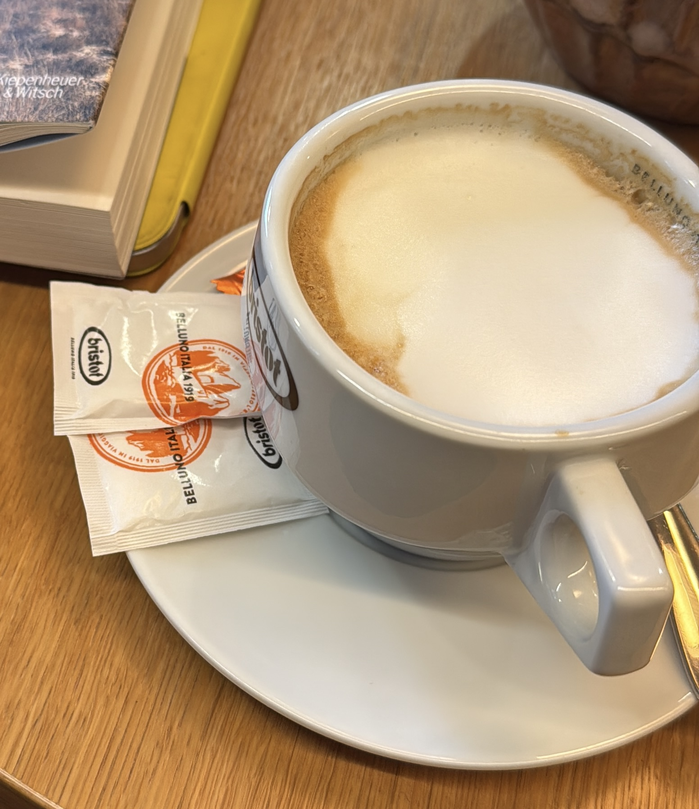

„Franz führte eine festgefahrene Nachfolge in sechs Wochen zu einem klaren gemeinsamen Plan. Sein Schutzraum tat allen gut.“
Konfliktnavigator & Ex-CFO Siemens Sub-Sahara
Ich bringe Ruhe in Drucksituationen – damit Entscheidungen wieder möglich werden.
Seit über 30 Jahren begleite ich Teams auf vier Kontinenten durch Krisen und schwierige Verhandlungen. Mit klarer Sprache, Empathie und einem Fokus auf Interessen entsteht wieder Vertrauen.
- 30+ Jahre internationale Führung
- Zertifizierter Wirtschaftsmediator
- Fünf Sprachen, vier Kontinente

Vertrauen
Stimmen, die zeigen, dass Konflikte lösbar sind.
Weitere Referenzen treffen ein. Wer direkte Ansprechpartner wünscht, bekommt sie diskret vermittelt – sprechen Sie mich einfach an.
Fragen Sie gern nach persönlichen Referenzen.
Angebote
Felder, in denen ich Verantwortung übernehme.
Nachfolge & Krisenphasen
Eigentümer, Beirat und Team wieder an einen Tisch bringen – mit klaren Rollen und Tempo.
- Gemeinsam Fokus erarbeiten
- Konfliktanalyse & Stakeholder-Mapping
- Fahrpläne für Übergaben
Verhandlungen mit Wirkung
Sparring für heikle Kunden- oder Investorenrunden, besonders in kulturell anspruchsvollen Situationen.
- Argumentations- und Szenarioarbeit
- Verhandlungssimulationen
- Begleitung vor Ort oder remote
Teams stärken
Zusammenarbeit stabilisieren, wenn Unsicherheit und Angst um sich greifen – mit Empathie und Struktur.
- Team-Workshops & Coaching
- Moderation sensibler Gespräche
- Routinen für Vertrauen & Fokus
Arbeitsweise
Kooperativ, menschlich, unternehmerisch.
Meine Laufbahn verbindet Konzernverantwortung und Mediationskompetenz. Ich spreche die Sprache der Geschäftsführung ebenso wie die ihrer Teams.

-
1993 – 2005
Revision, Controlling und Vertrieb bei Mannesmann & Siemens VDO.
-
2007 – 2012
VP Finance Asia Pacific & CFO Ultrasound, Siemens Healthcare.
-
2012 – 2022
Partner Operational & Financial Audit, Leitung Project Business Excellence.
-
2022 – 2025
CFO Siemens Sub-Sahara Afrika, Führung in hochdiversen Märkten.
Mediation & Haltung
Zertifizierter Wirtschaftsmediator (München, 2018). Vertraulich gemeinsame Lösungen schaffen, die den Interessen der Beteiligten gerecht werden.
Arbeitsweise
- Ich höre zu, bis alle Perspektiven auf dem Tisch liegen.
- Ich übersetze Konflikte in handhabbare Schritte.
- Ich unterstütze, bis die Umsetzung trägt.
Sprachen
Deutsch, Englisch, Spanisch, Französisch – Grundkenntnisse in Russisch & Zulu.
Für wen
Vier typische Situationen, in denen ich angefragt werde.
DanielGründer mit Tiefgang
Benötigt Sparring auf Augenhöhe, um Kundinnen und Investorinnen von einem komplexen Angebot zu überzeugen.
Ich strukturiere Argumente, simuliere Verhandlungen und übersetze Technik in Vertrauen.
WolfgangErfahrener Inhaber
Möchte Nachfolge oder Krise ohne Buzzwords lösen, mit jemandem, der Verantwortung übernimmt.
Ich bringe Autorität, Ruhe und eine klare Linie in Vorstand und Familie.
MichaelaGeschäftsführerin Sozialunternehmen
Braucht einen Partner, der Integrität und Vermittlung verbindet, wenn Ressourcen knapp sind.
Ich ermögliche Wirtschaftlichkeit, ohne den Fokus auf die Menschlichkeit zu verlieren.
HaraldKonfliktsensibler Nachfolger
Sucht Diskretion und Klarheit, um persönliche Dynamiken zu navigieren.
Ich sichere Entscheidungsfähigkeit und halte Teams in Spannungslagen zusammen.
Video
In zwei Minuten erfahren, wie ich arbeite.
Kurzes Selbstporträt: Wie ich Konflikte lese, Strukturen schaffe und Teams stärke.
Kontakt
Diskret ins Gespräch kommen.
Ein erstes Telefonat bleibt unter uns. Ich melde mich innerhalb von 24 Stunden.
- Telefon: +49 1575 1366678
- E-Mail: franz.wiehler@gmx.de
- Standort: Raum Nürnberg, europaweit remote
Alle Gespräche bleiben vertraulich.
